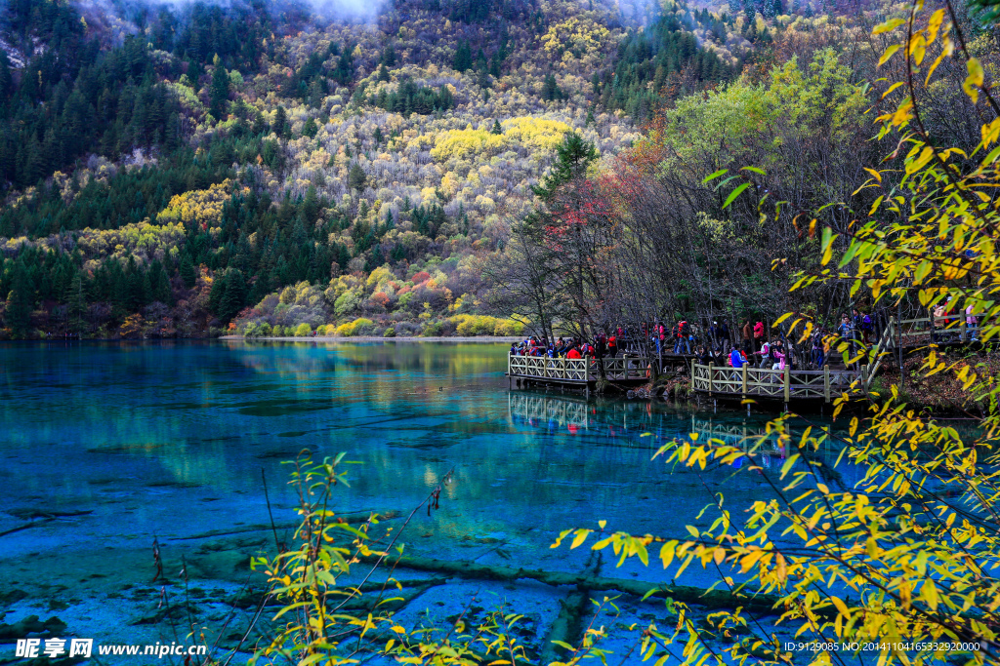
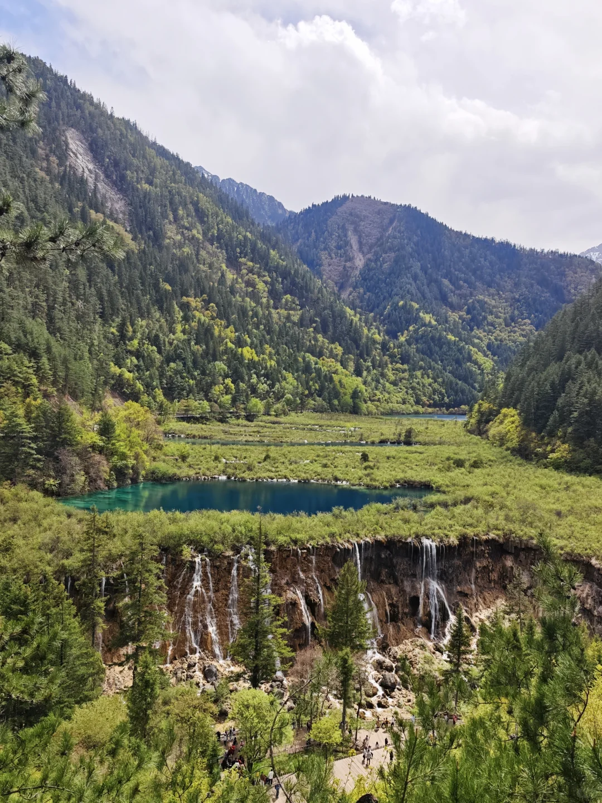
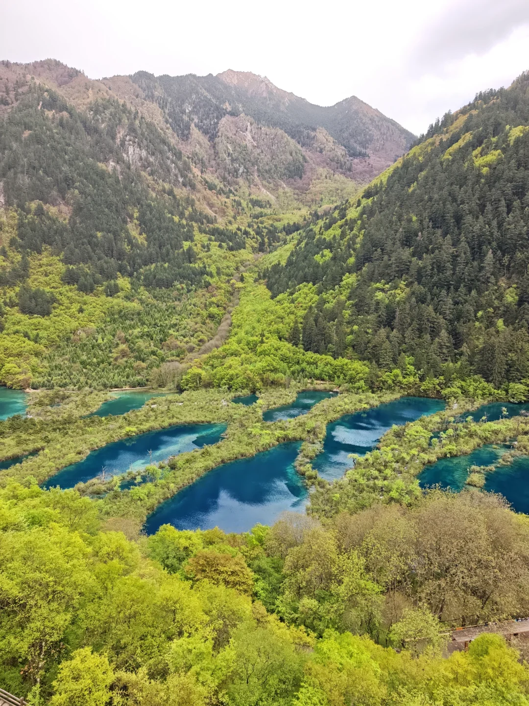

箭竹海（图3–4）
右线靠前站点。靠近原始森林一侧为浅滩、水流较少（图3）；顺栈道往熊猫海方向走，湖水逐渐变深、颜色愈发碧蓝通透（图4）。
📸 拍摄提示： 建议沿木栈道前行一段拍摄湖面由浅及深的渐变层次。

| 季节类型 | 景区门票 | 观光大巴车票 | 全包合计 | 执行时段与特惠 |
|---|---|---|---|---|
| 旺季套票 | ¥190 /人 | ¥90 /人 | ¥280 /人 | 4月1日 ~ 11月15日 (金秋彩林巅峰期) |
| 淡季套票 (极划算) | ¥80 /人 | ¥80 /人 | ¥160 /人 | 11月16日 ~ 次年3月31日 (冰瀑蓝冰雪景) |
💡 九寨沟内没有任何二次索道、电瓶车或缆车强制消费，所有景点全靠包含在 90 元车票内的公交化豪华大巴无限制无限次换乘。
📌 游客实测样本（博主 Suburb. 于 2024 年五一假期实地游玩，2026-09-19 整理）： 九寨沟一日往返与景点评价。该样本发生在五一假期，秋季客流、日照和水量不同；车次、直通车和景区调度须按出行日复核。
右线靠前站点。靠近原始森林一侧为浅滩、水流较少（图3）；顺栈道往熊猫海方向走，湖水逐渐变深、颜色愈发碧蓝通透（图4）。
湖旁山体多为裸露岩石，水色与箭竹海相近，纯净而深邃。在熊猫海上车点附近（图7）可远眺巍峨雪山与高山峡谷。
九寨沟当之无愧的视觉核心。同一水域中交织着鹅黄、翡翠绿、孔雀蓝与藏青色。清澈见底的水底沉睡着钙化千年的远古枯树木，宛如水下玉龙横卧。四周红叶与雪山环绕，值得重点停留。
能清晰眺望雪山的经典水景。宽阔钙华滩面上流水溅起万千水珠如珍珠跳跃；图12珍珠滩瀑布可拍摄飞瀑与雪山同框。若时间极紧可略作权衡。
九寨沟海拔最高、湖面最宽广的高山堰塞湖。水色深蓝静谧，群峰环抱，独臂老人松守护在侧。下车点至亲水步道需走长台阶，高反或膝盖疲劳者可在观景台休整。
九寨沟最小巧精美却色彩最浓郁的海子之一。池底钙华沉淀与藻类使湖水呈现梦幻般的孔雀蓝与青绿，即使在非丰水季依然通透夺目，仅次于五花海。

游览第 7 站 · 诺日朗大瀑布 (中枢)宽达 270 米的宏伟水帘，水流自诺日朗群海奔涌跌落，在金黄冷杉树木与灌木间飞泻百丈，水雾漫天。86版《西游记》片尾取景地。跟着景区指引走上较高处的观景台（图17），观景视野更为辽阔大气。

游览第 8 站 · 树正群海 (出沟段)出沟必经的树正沟核心群海。正对树正寨右侧的高处观景台是经典机位（图18），梯级海子层层跌落，半透明的钙华堤埂与翠绿水色相映，是九寨沟最具代表性的全景画面之一。
已按小红书博主 Suburb. 正文完整展示全部下载完成的子景点实拍照片（拍摄于 2024 年五一假期）：图3–4＝箭竹海，图5–7＝熊猫海，图8–10＝五花海，图11–12＝珍珠滩，图13–14＝长海，图15–16＝五彩池，图17＝诺日朗瀑布，图18＝树正群海。图片来自五一假期实拍，用于佐证景区子景点归属与真实动线。